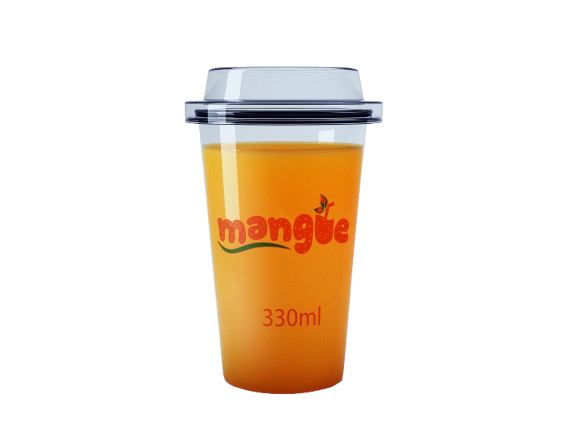
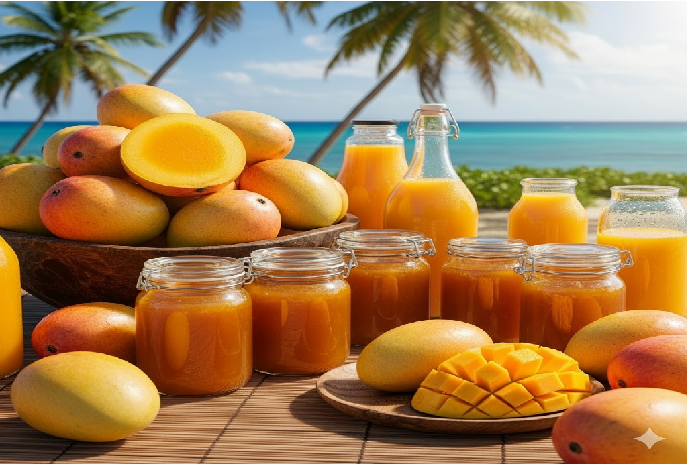
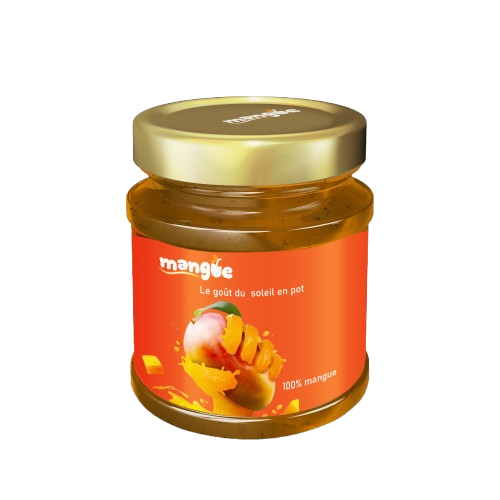

Découvrez la mangue sous sa plus belle forme Jus naturel & confiture artisanale, 100% mangue
Découvrez notre gamme de produits à base de mangue, élaborés avec des fruits soigneusement sélectionnés et cueillis à parfaite maturité. Notre jus de mangue 100% naturel séduit par sa fraîcheur, sa douceur et sa texture veloutée, idéale pour se désaltérer à tout moment. Notre confiture de mangue, quant à elle, offre une saveur riche et onctueuse, parfaite pour accompagner vos petits-déjeuners, desserts et moments gourmands. Deux produits authentiques, sans additifs, qui valorisent la mangue dans toute sa richesse et son goût unique.
100 % naturel, fabriqué avec des mangues fraîches et sans additifs. Grâce à un processus contrôlé, il garde toute sa saveur, sa fraîcheur et ses bienfaits pour offrir une boisson saine et rafraîchissante pour toute la famille.

Découvrez un délicieux jus de mangue 100 % naturel, présenté dans un gobelet pratique de 330 ml. Sa couleur vive et sa texture fluide témoignent de la qualité des mangues fraîches utilisées. Sans conservateurs ni additifs, ce jus offre un goût doux, fruité et authentique, parfait pour se rafraîchir à tout moment de la journée. Un format idéal pour emporter partout, savourer simplement et profiter de toute la richesse de la mangue..
Savourez toute la douceur de la mangue avec cette confiture 100 % naturelle, présentée dans un élégant pot au design moderne. Préparée à partir de mangues fraîches soigneusement sélectionnées, elle offre une texture onctueuse et un goût intensément fruité. Sans additifs artificiels, cette confiture capture le goût du soleil en pot, parfaite pour accompagner vos petits-déjeuners, desserts et recettes gourmandes. Un véritable concentré de saveur tropicale qui apporte chaleur et plaisir à chaque cuillère.


Découvrez notre confiture de mangue artisanale, préparée avec des fruits soigneusement sélectionnés et cueillis à maturité. Sa texture onctueuse et son goût naturellement sucré éveilleront vos papilles dès la première cuillerée. Parfaite sur vos tartines, dans vos desserts ou pour accompagner vos petits-déjeuners gourmands.